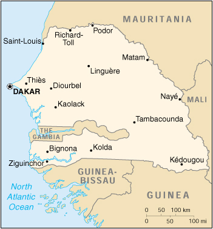

|
Senegal | |
| Introduction Geography People Government Economy Communications Transportation Military Transnational Issues | ||
|  | ||
| Senegal | Introduction | Top of Page |
| Background: | Independent from France in 1960, Senegal joined with The Gambia to form the nominal confederation of Senegambia in 1982. However, the envisaged integration of the two countries was never carried out, and the union was dissolved in 1989. Despite peace talks, a southern separatist group sporadically has clashed with government forces since 1982. Senegal has a long history of participating in international peacekeeping. |
| Senegal | Geography | Top of Page |
| Location: | Western Africa, bordering the North Atlantic Ocean, between Guinea-Bissau and Mauritania |
| Geographic coordinates: | 14 00 N, 14 00 W |
| Map references: | Africa |
| Area: |
total:
196,190 sq km
land: 192,000 sq km water: 4,190 sq km |
| Area - comparative: | slightly smaller than South Dakota |
| Land boundaries: |
total:
2,640 km
border countries: The Gambia 740 km, Guinea 330 km, Guinea-Bissau 338 km, Mali 419 km, Mauritania 813 km |
| Coastline: | 531 km |
| Maritime claims: |
contiguous zone:
24 NM
continental shelf: 200 NM or to the edge of the continental margin exclusive economic zone: 200 NM territorial sea: 12 NM |
| Climate: | tropical; hot, humid; rainy season (May to November) has strong southeast winds; dry season (December to April) dominated by hot, dry, harmattan wind |
| Terrain: | generally low, rolling, plains rising to foothills in southeast |
| Elevation extremes: |
lowest point:
Atlantic Ocean 0 m
highest point: unnamed feature near Nepen Diakha 581 m |
| Natural resources: | fish, phosphates, iron ore |
| Land use: |
arable land:
12%
permanent crops: 0% permanent pastures: 16% forests and woodland: 54% other: 18% (1993 est.) |
| Irrigated land: | 710 sq km (1993 est.) |
| Natural hazards: | lowlands seasonally flooded; periodic droughts |
| Environment - current issues: | wildlife populations threatened by poaching; deforestation; overgrazing; soil erosion; desertification; overfishing |
| Environment - international agreements: |
party to:
Biodiversity, Climate Change, Desertification, Endangered Species, Hazardous Wastes, Law of the Sea, Marine Life Conservation, Nuclear Test Ban, Ozone Layer Protection, Ship Pollution, Wetlands, Whaling
signed, but not ratified: Marine Dumping |
| Geography - note: | The Gambia is almost an enclave of Senegal |
| Senegal | People | Top of Page |
| Population: | 10,284,929 (July 2001 est.) |
| Age structure: |
0-14 years:
44.07% (male 2,279,996; female 2,252,255)
15-64 years: 52.88% (male 2,603,829; female 2,834,328) 65 years and over: 3.05% (male 155,877; female 158,644) (2001 est.) |
| Population growth rate: | 2.93% (2001 est.) |
| Birth rate: | 37.46 births/1,000 population (2001 est.) |
| Death rate: | 8.35 deaths/1,000 population (2001 est.) |
| Net migration rate: | 0.21 migrant(s)/1,000 population (2001 est.) |
| Sex ratio: |
at birth:
1.03 male(s)/female
under 15 years: 1.01 male(s)/female 15-64 years: 0.92 male(s)/female 65 years and over: 0.98 male(s)/female total population: 0.96 male(s)/female (2001 est.) |
| Infant mortality rate: | 56.75 deaths/1,000 live births (2001 est.) |
| Life expectancy at birth: |
total population:
62.56 years
male: 60.94 years female: 64.22 years (2001 est.) |
| Total fertility rate: | 5.12 children born/woman (2001 est.) |
| HIV/AIDS - adult prevalence rate: | 1.77% (1999 est.) |
| HIV/AIDS - people living with HIV/AIDS: | 79,000 (1999 est.) |
| HIV/AIDS - deaths: | 7,800 (1999 est.) |
| Nationality: |
noun:
Senegalese (singular and plural)
adjective: Senegalese |
| Ethnic groups: | Wolof 43.3%, Pular 23.8%, Serer 14.7%, Jola 3.7%, Mandinka 3%, Soninke 1.1%, European and Lebanese 1%, other 9.4% |
| Religions: | Muslim 92%, indigenous beliefs 6%, Christian 2% (mostly Roman Catholic) |
| Languages: | French (official), Wolof, Pulaar, Jola, Mandinka |
| Literacy: |
definition:
age 15 and over can read and write
total population: 33.1% male: 43% female: 23.2% (1995 est.) |
| Senegal | Government | Top of Page |
| Country name: |
conventional long form:
Republic of Senegal
conventional short form: Senegal local long form: Republique du Senegal local short form: Senegal |
| Government type: | republic under multiparty democratic rule |
| Capital: | Dakar |
| Administrative divisions: | 10 regions (regions, singular - region); Dakar, Diourbel, Fatick, Kaolack, Kolda, Louga, Saint-Louis, Tambacounda, Thies, Ziguinchor |
| Independence: | 4 April 1960 (from France); complete independence was achieved upon dissolution of federation with Mali on 20 August 1960 |
| National holiday: | Independence Day, 4 April (1960) |
| Constitution: | 3 March 1963, revised 1991 |
| Legal system: | based on French civil law system; judicial review of legislative acts in Constitutional Court; the Council of State audits the government's accounting office; has not accepted compulsory ICJ jurisdiction |
| Suffrage: | 18 years of age; universal |
| Executive branch: |
chief of state:
President Abdoulaye WADE (since 1 April 2000)
head of government: Prime Minister Madior BOYE (since 3 March 2001) cabinet: Council of Ministers appointed by the prime minister in consultation with the president elections: president elected by popular vote for a seven-year term; election last held 27 February and 19 March 2000 (next to be held 27 February 2007); prime minister appointed by the president election results: Abdoulaye WADE elected president; percent of vote in the second round of voting - Abdoulaye WADE (PDS) 58.49%, Abdou DIOUF (PS) 41.51% |
| Legislative branch: |
unicameral National Assembly or Assemblee Nationale (120 seats; members are elected by direct popular vote to serve five-year terms)
note: the former National Assembly, dissolved in the spring of 2001, had 140 seats elections: last held 29 April 2001 (next to be held NA 2006) election results: percent of vote by party - NA%; seats by party - SOPI Coalition 89, AFP 11, PS 10, other 10 |
| Judicial branch: | Constitutional Court; Council of State; Court of Final Appeals or Cour de Cassation; Court of Appeals; note-the judicial system was reformed in 1992 |
| Political parties and leaders: | African Party for Democracy and Socialism or And Jef (also known as PADS/AJ) [Landing SAVANE, secretary general]; African Party of Independence [Majhemout DIOP]; Alliance of Forces of Progress or AFP [Moustapha NIASSE]; Democratic and Patriotic Convention or CDP (also known as Garab-Gi) [Dr. Iba Der THIAM]; Democratic League-Labor Party Movement or LD-MPT [Dr. Abdoulaye BATHILY]; Front for Socialism and Democracy or FSD [Cheikh Abdoulaye DIEYE]; Gainde Centrist Bloc or BGC [Jean-Paul DIAS]; Independence and Labor Party or PIT [Amath DANSOKHO]; National Democratic Rally or RND [Madier DIOUF]; Senegalese Democratic Party or PDS [Abdoulaye WADE]; Senegalese Democratic Party-Renewal or PDS-R [Serigne Lamine DIOP, secretary general]; Senegalese Democratic Union-Renewal or UDS-R [Mamadou Puritain FALL]; Socialist Party or PS [President Abdou DIOUF]; SOPI Coalition (a 40-party coalition led by the PDS) [Abdoulaye WADE]; Union for Democratic Renewal or URD [Djibo Leyti KA]; other small parties |
| Political pressure groups and leaders: | labor; Muslim brotherhoods; students; teachers |
| International organization participation: | ACCT, ACP, AfDB, CCC, ECA, ECOWAS, FAO, FZ, G-15, G-77, IAEA, IBRD, ICAO, ICC, ICFTU, ICRM, IDA, IDB, IFAD, IFC, IFRCS, ILO, IMF, IMO, Inmarsat, Intelsat, Interpol, IOC, IOM, ITU, MINURSO, MIPONUH, MONUC, NAM, OAU, OIC, OPCW, PCA, UN, UNCTAD, UNESCO, UNIDO, UNIKOM, UNMIBH, UNMIK, UNTAET, UPU, WADB, WAEMU, WCL, WFTU, WHO, WIPO, WMO, WToO, WTrO |
| Diplomatic representation in the US: |
chief of mission:
Ambassador Mamadou Mansour SECK
chancery: 2112 Wyoming Avenue NW, Washington, DC 20008 telephone: [1] (202) 234-0540 |
| Diplomatic representation from the US: |
chief of mission:
Ambassador Harriet L. ELAM-THOMAS
embassy: Avenue Jean XXIII at the corner of Rue Kleber, Dakar mailing address: B. P. 49, Dakar telephone: [221] 823-4296, 823-7384 FAX: [221] 822-2991 |
| Flag description: | three equal vertical bands of green (hoist side), yellow, and red with a small green five-pointed star centered in the yellow band; uses the popular pan-African colors of Ethiopia |
| Senegal | Economy | Top of Page |
| Economy - overview: | In January 1994, Senegal undertook a bold and ambitious economic reform program with the support of the international donor community. This reform began with a 50% devaluation of Senegal's currency, the CFA franc, which is linked at a fixed rate to the French franc. Government price controls and subsidies have been steadily dismantled. After seeing its economy contract by 2.1% in 1993, Senegal made an important turnaround, thanks to the reform program, with real growth in GDP averaging 5% annually in 1995-99. Annual inflation has been pushed down to 2%, and the fiscal deficit has been cut to less than 1.5% of GDP. Investment rose steadily from 13.8% of GDP in 1993 to 16.5% in 1997. As a member of the West African Economic and Monetary Union (UEMOA), Senegal is working toward greater regional integration with a unified external tariff. Senegal also realized full Internet connectivity in 1996, creating a miniboom in information technology-based services. Private activity now accounts for 82% of GDP. On the negative side, Senegal faces deep-seated urban problems of chronic unemployment, juvenile delinquency, and drug addiction. Real GDP growth is expected to rise above 6%, while inflation is likely to hold at 2% in 2001-02. |
| GDP: | purchasing power parity - $16 billion (2000 est.) |
| GDP - real growth rate: | 5.7% (2000 est.) |
| GDP - per capita: | purchasing power parity - $1,600 (2000 est.) |
| GDP - composition by sector: |
agriculture:
19%
industry: 20% services: 61% (1997 est.) |
| Population below poverty line: | NA% |
| Household income or consumption by percentage share: |
lowest 10%:
1.4%
highest 10%: 42.8% (1991) |
| Inflation rate (consumer prices): | 1.5% (2000 est.) |
| Labor force: | NA |
| Labor force - by occupation: | agriculture 60% |
| Unemployment rate: | NA%; urban youth 40% |
| Budget: |
revenues:
$885 million
expenditures: $885 million, including capital expenditures of $125 million (1996 est.) |
| Industries: | agricultural and fish processing, phosphate mining, fertilizer production, petroleum refining, construction materials |
| Industrial production growth rate: | 7% (1998 est.) |
| Electricity - production: | 1.27 billion kWh (1999) |
| Electricity - production by source: |
fossil fuel:
100%
hydro: 0% nuclear: 0% other: 0% (1999) |
| Electricity - consumption: | 1.181 billion kWh (1999) |
| Electricity - exports: | 0 kWh (1999) |
| Electricity - imports: | 0 kWh (1999) |
| Agriculture - products: | peanuts, millet, corn, sorghum, rice, cotton, tomatoes, green vegetables; cattle, poultry, pigs; fish |
| Exports: | $959 million (f.o.b., 2000) |
| Exports - commodities: | fish, ground nuts (peanuts), petroleum products, phosphates, cotton |
| Exports - partners: | France 17%, India 17%, Italy 12%, Spain 6%, Mali 6%, Cote d'Ivoire 4% (1999) |
| Imports: | $1.3 billion (f.o.b., 2000) |
| Imports - commodities: | foods and beverages, consumer goods, capital goods, petroleum products |
| Imports - partners: | France 30%, Nigeria 7%, Italy 6%, Thailand 5%, Germany 4%, US 4% (1999) |
| Debt - external: | $4.1 billion (1998 est.) |
| Economic aid - recipient: | $647.5 million (1995) |
| Currency: | Communaute Financiere Africaine franc (XOF); note - responsible authority is the Central Bank of the West African States |
| Currency code: | XOF |
| Exchange rates: | Communaute Financiere Africaine francs (XOF) per US dollar - 699.21 (January 2001), 711.98 (2000), 615.70 (1999), 589.95 (1998), 583.67 (1997), 511.55 (1966); note - from 1 January 1999, the XOF is pegged to the euro at a rate of 655.957 XOF per euro |
| Fiscal year: | calendar year |
| Senegal | Communications | Top of Page |
| Telephones - main lines in use: | 116,000 (1997) |
| Telephones - mobile cellular: | 1,149 (1996) |
| Telephone system: |
general assessment:
good system
domestic: above-average urban system; microwave radio relay, coaxial cable and fiber-optic cable in trunk system international: 4 submarine cables; satellite earth station - 1 Intelsat (Atlantic Ocean) |
| Radio broadcast stations: | AM 10, FM 14, shortwave 0 (1998) |
| Radios: | 1.24 million (1997) |
| Television broadcast stations: | 1 (1997) |
| Televisions: | 361,000 (1997) |
| Internet country code: | .sn |
| Internet Service Providers (ISPs): | 1 (2000) |
| Internet users: | 30,000 (2000) |
| Senegal | Transportation | Top of Page |
| Railways: |
total:
906 km
narrow gauge: 906 km 1.000-meter gauge (70 km double track) |
| Highways: |
total:
14,576 km
paved: 4,271 km unpaved: 10,305 km (1996) |
| Waterways: |
897 km
note: 785 km on the Senegal river, and 112 km on the Saloum river |
| Ports and harbors: | Dakar, Kaolack, Matam, Podor, Richard Toll, Saint-Louis, Ziguinchor |
| Airports: | 20 (2000 est.) |
| Airports - with paved runways: |
total:
10
over 3,047 m: 1 1,524 to 2,437 m: 7 914 to 1,523 m: 2 (2000 est.) |
| Airports - with unpaved runways: |
total:
10
1,524 to 2,437 m: 5 914 to 1,523 m: 4 under 914 m: 1 (2000 est.) |
| Senegal | Military | Top of Page |
| Military branches: | Army, Navy, Air Force, National Gendarmerie, National Police (Surete Nationale) |
| Military manpower - military age: | 18 years of age |
| Military manpower - availability: | males age 15-49: 2,311,063 (2001 est.) |
| Military manpower - fit for military service: | males age 15-49: 1,207,360 (2001 est.) |
| Military manpower - reaching military age annually: | males: 114,189 (2001 est.) |
| Military expenditures - dollar figure: | $68 million (FY97) |
| Military expenditures - percent of GDP: | 1.4% (FY97) |
| Senegal | Transnational Issues | Top of Page |
| Disputes - international: | none |
| Illicit drugs: | transshipment point for Southwest and Southeast Asian heroin moving to Europe and North America; illicit cultivator of cannabis |
{kind=link}
{kind=link}